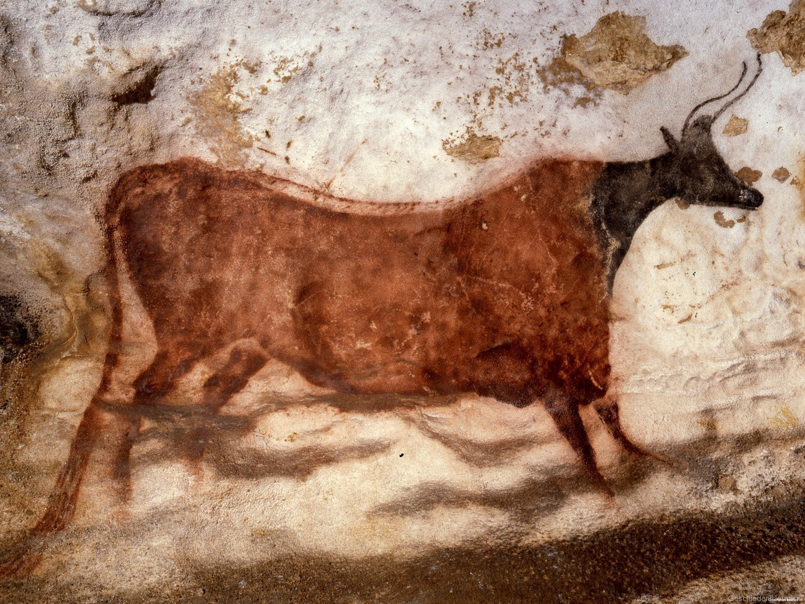
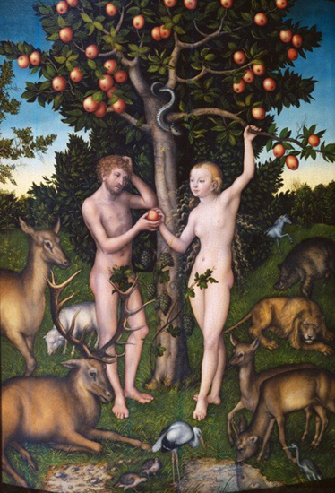
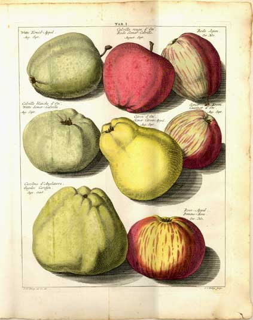
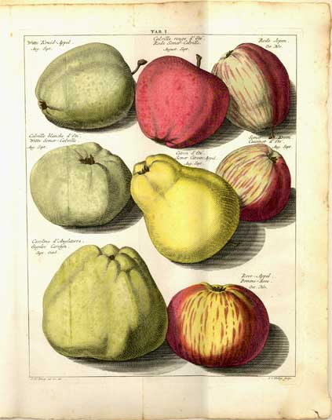
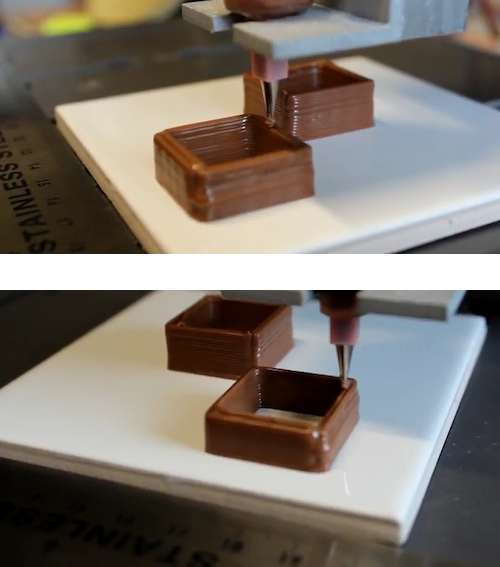
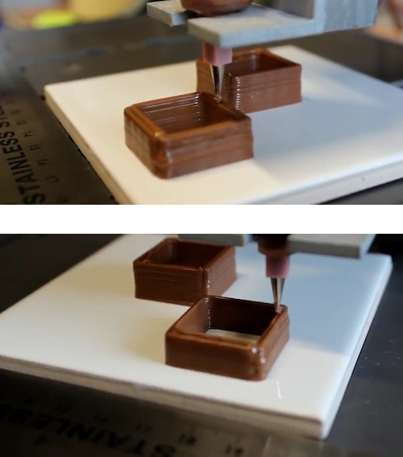

Hoe is de invloed van voedsel visueel aantoonbaar op de maatschappij?
Inleiding
Voeding is voor de mens 1 van de elementen uit de natuur om in leven te blijven en de oorzaak van ons moderne bestaan. Zo is het voedsel de oorzaak van urbanisatie en cultivering, waarin de mens zich voortdurend ontwikkeld. Met deze ontwikkelingen word het voedsel constant aangepast door de mens. Voedsel speelt altijd een centrale rol in het menselijke bestaan. Daarom is voedsel een mooi metafoor om een reflectie te creëren op de maatschappij. Omdat voedsel altijd beeldend aanwezig is, zal de reflectie altijd visueel aantoonbaar zijn. Maar hoe is deze invloed van voedsel dan visueel aantoonbaar op de maatschappij?
Door deze beeldende vorming en constante verandering in het voedsel, is dit onderwerp voor vele kunstenaars en ontwerpers interessant om mee te werken. In de kunst word voedsel als symbool gebruikt, voor de weergave van een cultuur of maatschappij, die typerend is aan een bepaalde periode in de tijd.
Zo ontstaat er om voedsel heen, een tijdlijn waarin precies visueel kan worden aangetoond hoe de menselijke cultuur zich heeft gevormd en zich zo ook mogelijk gaat vormen in de toekomst. Wie zijn geschiedenis weet, kan de toekomst beter voorspellen. De constante drang van de mens om zichzelf en zijn leefomgeving te verbeteren, is duidelijk zichtbaar in het voedsel. Tegenwoordig zijn er veel ontwerpers die zich bezig houden met de vele facetten die zijn ontstaan rondom voedsel zoals: verpakking, reclame, smaak en infrastructuur. Het woord 'voedsel' is zo door de tijd heen gevormd tot een abstract begrip.
Het toekomstbeeld van voedsel is een onderwerp die de komende 40 jaar een van de grootse rollen zal gaan spelen, in de ontwikkeling naar een duurzaam bestaan. De biotechnologische wetenschap heeft hier al baanbrekende ontwikkeling gemaakt, met bijvoorbeeld het in vitro kweekvlees. Het hoeft niet lang meer te duren voordat deze en andere technieken, commerciële realiteit kunnen worden. Deze veranderingen zouden drastische gevolgen hebben op de structuur van de huidige samenleving. Zo zal er een nieuw infrastructuurnetwerk ontworpen moeten worden en is politieke hervorming nodig.
Om dit gevolg voor de meeste mensen visueel duidelijk te maken, zijn kunstenaars en ontwerpers bezig deze abstracte informatie om te zetten naar speculatieve kunst projecten. Op deze manier geven de projecten een fictief beeld weer, die bewustzijn creëert over welke techniek invloed krijgt op de toekomstige maatschappij.
1. Winston Churchill, Thoughts and Adventures. London, 1932.
"Binnen vijftig jaar zullen we kunnen ontsnappen aan de absurde regeling dat we een hele kip moeten kweken om een borst of een vleugel te kunnen eten, door deze onderdelen apart te produceren in een lab."1
Abstract
Food is for the humanity one of the elements to stay alive and the origin of modern existence. Food is the final cause that give rise to the first urbanization and cultivation, where man is developing constantly. The central role of food here within, is a nice metaphor to create a reflection on society, which is always visually detectable. On this fact I formulate my research question of this thesis: How is the impact of food visually detectable on society?
Because of the constant change of food within the society, this topic is inspiring for artist to work with. In the arts, food is used as an symbol to give a reproduction on culture or society, which is typical for a certain period in time. In this way, there arises a visual timeline of art around food, in which it can accurately shown how the human culture has formed. And, properly to shape in the future.
In this thesis, I started with research on the history of the food and the human being. This show's, that our agriculture is actually only a novelty in the 150,000 years that modern humans (Homo Sapiens) exist. This first Homo Sapiens, visualized their catches of hunting on petroglyphs, which are the first artistic creations of food. Only in 12.000 B.C. the first agriculture started around the near East of Israel and Lebanon. This led on to the domestication of wild animals and vegetables. From this moment on, humans had the influence on nature.
Grot-tekeninging uit de grotten van Lascaut, Frankrijk. Deze rotstekening is naar schatting 15.000 jaar oud.
Yet, still people believed that food was created and given by God, which is shown in a lot of beautiful religious medieval paintings from the Paradise. It is here to note, that the painter tried to control in his paintings the manufacturability, glorification and manipulation of the god forces. Visually, this was already possible, but not in reality.
Until the Enlightenment in 18th century, the human makes important change in the way we looked to the world. The approach of food changed hereby, to an object of science and was no longer a creation of God.1 Here is it, the human that tried to technically improve food for the need of society. This became visual in the first encyclopedia's, that veracious illustrates the experiments with food.
German philosopher and zoologist Ernst Haeckel, considered 'plants as beautiful, complicated machines.
The constant urge of man to improve himself and his environment, is clearly visual in modern time. Nowadays there are many designers who are involved in the many facets that have grown up around food, such as: packaging, advertising, taste and infrastructure. This shaped into an abstract concept, that we formulate in the futuristic word 'supermarket', that let us live in artificial setting.
The future vision of food, is a subject that will play a major role the development of a sustainable livelihood, in the next 40 years.The biotechnology science has made pioneering developments, for example the In-vitro cultured meat by Prof. Mark Post.
To make this visually clear for the most people, artist and designers are converting this abstract information to speculative art projects. In this way the projects visualize a fictitious vision, which creates awareness about how technology could impact the future society.
1. Geschiedenis van onze voedselproductie
1.1 Hoe is ons huidige voedsel tot stand gekomen?
Om mijn scriptie te beginnen met schrijven over een beeld van ons voedsel, wil ik graag eerst een beeld schetsen van hoe ons voedsel is ontstaan. Het is over het algemeen vrij duidelijk hoe de mens is ontstaan, maar hoe is ons voedsel mee geëvolueerd naar het beeld dat wij nu kennen? In deze evolutie overduidelijk te zien dat er veel invloed is geweest van de mens. Neem nu bijvoorbeeld de vele verschillende koolsoorten, die wij nu kennen als wittekool, broccoli, bloemkool etc. De natuur heeft dit in de 4000 jaar dat deze soorten zijn ontstaan, niet zelf kunnen ontwikkelen. Hier heeft de mens duidelijk een manipulatieve invloed op uitgeoefend door selectief verschillende soorten planten bij elkaar te zetten, om hier vervolgens een nieuwe soort of mutant uit te vormen. In dit hoofdstuk wil ik de geschiedenis beschrijven hoe de evolutie in de vorming van ons voedsel te zien is.
Ons voedselsysteem is inmiddels gebaseerd op landbouw. Dat klinkt logischer dan het in werkelijkheid is. Landbouw is eigenlijk nog maar een nieuwigheid in de 150.000 jaar dat de moderne mens (Homo sapiens) op aarde is. De moderneGrotten van Lascaut, Frankrijk. Rotstekening 15.000 jaar oud. Deze afhankelijkheid veranderde in het Nabije Oosten (Israel en Libanon) ontstond in 12.000 v.Chr. de Natufische cultuur.2 Omdat de mens zijn verzamelde granen, peulen en noten wilde beschermen tegen wilde dieren, ontwikkelde hij verbetering in de jacht en verzameltechnieken. Zo konden de jager-verzamelaars langer op eenzelfde plaats blijven wonen. Hierin verscheen de sedentaire, dit is een eerste vaste woonplek voor de mens, als kleinschalige urbanisatie. Deze nieuwe vorming in cultuur ontstond dus door de invloed die de mens kreeg op zijn voedsel. Ook is dit het eerste begin van domesticatie en cultivering van natuur door de mens. Door verdere ontwikkelingen in opslag werd het mogelijk om zeker te zijn van voedsel en een toekomstbeeld te krijgen voor het volgende jaar.
3. Louise O. Fresco, 2012. Hamburgers in het paradijs, Amsterdam, Prometheus - Bert Bakker.
Lucas Cranach de Oude, Adam en Eva, 1526, 1526, Museum Courtauld Institute of Art Gallery, Londen
Dit leidde vervolgens verder naar de domesticatie van wilde beesten en groenten. Wij kregen invloed op het gedrag van beesten, waardoor deze tam werden en nu afhankelijk werden van de mens. Voedsel werd op grotere schaal verbouwd door reproductie van een gewas. De vormen van wilde granen en groentesoorten veranderde langzaam, door selectie en kruising van het gewas.3
3. Louise O. Fresco, 2012. Hamburgers in het paradijs, Amsterdam, Prometheus - Bert Bakker.
De appel is een mooi voorbeeld van een gewas dat door de mens in samenwerking met de natuur veredeld werd tot steeds een andere creatie en variatie. De oorsprong van de appel ligt in Kazachstan, waar vele wilde appelsoorten in bossen voorkomen. Via enten en stekken is het simpel om een appelsoort genetisch te klonen of te veranderen door menselijke hand. Door deze oneindige mogelijkheid van reproductie werd de appel steeds innovatiever doorontwikkeld. Hierbij veranderde de vorm, de kleur en de smaak talloze keren.
Illustraties uit 'Pomologia dat is beschryvingen en afbeeldingen van de beste zoorten van appels en peeren', Johann Hermann Knoop, 1763

Door handel verplaatste de appel zich vanuit Kazachstan over de rest van de wereld, zo is de grootste appeldiversiteit nu heel ver van zijn oorspronkelijke gebied te vinden, namelijk in de Verenigde Staten waar 2500 rassen voorkomen. Wereldwijd zijn er 7500 appel soorten te vinden, een aantal waar geen ander gewas aan kan tippen.4 Maar hoelang zal dit nog duren met de gentechnologie in het achterhoofd?
Illustraties uit 'Pomologia dat is beschryvingen en afbeeldingen van de beste zoorten van appels en peeren', Johann Hermann Knoop, 1763
4. Marjoleine Boonstra (regie): Fresco's Paradijs. Prod.:Human, 2013
Tot aan de Verlichting in de 18e eeuw: hier veranderde de reden van voedsel. Voedsel werd niet langer benaderd als Goddelijke creatie, maar werd nu wetenschappelijke benaderd als object. Zo beschouwde de Duitse filosoof Ernst Haeckel, 'planten als prachtig, gecompliceerde machines.'5 De vorm en het praktische gebruik van planten en dieren werden belangrijk. Door nieuwe kennis in de wetenschap van veredeling in voedsel, werd het mogelijk bewust planten te ontwikkelen die zo goed mogelijk aan de eisen van de mens voldoen. De nieuwe kennis van wetenschappelijke experimenten werden gedocumenteerd, aan de hand van waarheidsgetrouwe illustraties, die de wetenschappelijke teksten onderbouwden. Zo ontstonden de eerste encyclopedieën, met als doel de kennis zo wijd mogelijk te verspreiden.6
5. Jano Lanjouw, “De geschiedenis van een duurzame voedseltoekomst”. Dynamic Foodbook, 2013 p.45-48.
5. J6. Blom. P, 2004, Enlightening the World: Encyclopédie, the book that changed the course of history. Londen: HarperCollins publishers
Op dit punt werd ook de zaadsector commercieel. Zo ontstond er een speciaal opgerichte sector die zich bezig ging houden met het veredelen van zaden voor voedsel en bloemen. Een mooi voorbeeld is de wortel die in de 17e eeuw in opdracht van het Huis Oranje Nassau al werd gemanipuleerd. Door eigenschappen te kruisen, ontstond een speciaal ontworpen oranje wortel.7 Het resultaat had de intentie privé bezit te zijn, maar toch is deze wortel een standaard geworden. De originele oerwortels die er in vele kleuren bestaan, zijn ons inmiddels vervreemd geraakt en worden nu getypeerd als ‘wild’ en ‘speciaal’. Deze manipulatieve omgang kan worden beschouwt als de bakermat van de hedendaagse omgang met voedsel.
7. René Zanderink, “Over oranje, gele, witte en rode wortelen”, Origine, 2012 p.58-62
Wat hier opvalt is dat door de mogelijkheid van manipulatie er een monocultuur in de wortel is gaan ontstaan. Misschien is dit opzettelijk gedaan door de Koninklijke Familie, maar we zijn hierdoor wel massaal overgestapt naar één soort wortel. Is dit een waarschuwing voor onze toekomst?
Is dit het begin van digitaal voedsel? Chocolade 3d printer: 'The Choc Creature', Dr Liang Hao, of the University of Exeter 2012

1.2 Genetische invloeden
In de 19e eeuw ontdekte Georg Mendel, de erfelijkheidsleer en formuleerde daarbinnen de wetten van Mendel. Hij ontdekte dat de genen in DNA recessief of dominant kunnen zijn. Met deze leer kon men bijvoorbeeld de kleur van bloemblad vooraf bepalen. Deze ontdekking was een technische revolutie, die ik beschouw als een eerste pré-digitale vondst. Omdat DNA eigenschappen bestaan uit codes welke door de mens veranderd kunnen worden, ontstaat er een manier om nieuwe eigenschappen in DNA te vormen en aan te sturen. Dit is inherent aan de digitale programmeertaal die op een computer word gebruikt, die nieuwe eigenschappen op een website kunnen laten functioneren. Zal hier ook een begin van digitaal voedsel in de toekomstig liggen?
Tegenwoordig is DNA modificatie een normaal begrip geworden: in Europa over het algemeen negatief, maar in de V.S. positief. Bijna elk fruit is al zodanig gemanipuleerd, dat het langer bewaard en gemakkelijker vervoerd kan worden.8 Dit zijn kleine veranderingen in ons voedsel, waarvoor weinig reden is er bij stil te staan. Maar juist op deze manier wordt de vervreemding van originaliteit groter. Genetisch gemanipuleerde organismen (GMO) hebben nieuwe eigenschappen die functioneren zoals de mens dat verlangt. Hier komen we weer terug op menselijke drang macht willen bezitten over de natuur en voedsel. Wie macht heeft over voedsel, heeft macht over de mensheid. Zo is GMO de snelst verspreide landbouwmethode ooit: 95% van het globale groentezaad is in handen van maar vijf grote bedrijven.9 “Biotechnologie lijkt een instrument in handen van het grote bedrijfsleven, en lijkt gericht op de dominantie van de markt en het onderwerpen van de natuur” 10 vertelt Louise O. Fresco over deze intrede van GMO's. De potentie van biotechnologie kan dus een gigantische impact maken op de maatschappij, op welke manier die potentie benut wordt is iets dat de tijd zal uitwijzen.
8. Centrum voor Genetische Bronnen Nederland, Veredelde Zaken, Wageningen UR, (2009), Wageningen
9. Tomas Van Heste “Is ons zaad van moeder natuur of van Monsanto?”, De Correspondent, 14 februarie 2014
10. Louise O. Fresco, 2012. Hamburgers in het paradijs, Amsterdam, Prometheus - Bert Bakker. 2. De vorming van voedsel
2. De vorming van voedsel
2.1 Hoe word voedsel hedendaags visueel gevormd?
Door groei van de economie, is de diversiteit in ons voedingsassortiment zo ontzetten groot geworden, dat dit haast op een werkelijk paradijs begint te lijken. Op dit moment leeft de samenleving in een kunstmatig voedseloverschot dat wordt aangehouden door de economie. In de afgelopen 50 jaar is het voedsel met succes zo goedkoop mogelijk gemaakt. Dit had als gevolg dat we niet langer het grootste deel van ons inkomen hoeven te besteden aan voedsel, maar dat we het nu besteden aan iets anders.11 Deze werkelijkheid draagt het woord 'supermarkt', dit is DE plek waar voor de mens al het mogelijke voedsel te verzamelen valt. Zo quote van Mensvoort, “De supermarkt, het is eigenlijk een volkomen futuristisch woord, maar toch gebruiken wij dit nu al gedachteloos”. 12
11. James Trainor en Ana Paula Cohen, ‘Frieze’, issue 66, 2002
12. Van Mensvoort, K, (2014) Design Fiction, Crossover Works 2, February 2014, ISBN 97890821762 0 9
Video,'The Hunt' van Christian Jankowski 1992/1997
Een mooi voorbeeld om je bewust af te vragen hoe groot deze diversiteit aan verkrijgbaar voedsel nu eigenlijk is, wordt getoond in de korte film 'The Hunt', van de Duitse multimedia kunstenaar Christian Jankowski. De video werd o.a. getoond tijdens de Food Forward expositie in Stroom, Den Haag in 2012. De video toont een strooptocht door supermarkten waarbij Jankowski ‘jaagt’ op voedsel, met pijl en boog. Hij gedraagt zich hier als een indiaan, die niet met zijn tijd is meegegaan. De wildernis om in te jagen is hier vervangen door een hedendaagse supermarkt waar het wilde voedsel getransformeerd is naar voor hem vervreemd bewerkt en verpakt voedsel. Zo laat Jankowski zien dat wij vervreemd zijn geraakt van het proces dat tussen het begin en de eindvorm van een voedselproduct zit.13
13. Expositie, Food Forward: Christian Jankowski. Stroom, Den Haag. 15 januari t/m 1 april 2012
Het proces wat de video van Jankowski aantoont, is typerend voor de omgang met voedsel in de hedendaagse samenleving. Over elk voedselproduct, verpakt of onverpakt, is nagedacht. Er is altijd iets aan ontworpen. Achter elk product in een supermarkt schuilt een heel productieproces dat niet meer zichtbaar is wanneer het in de winkel ligt. Het enige wat gezien kan worden is de verpakking.
Een simpel voorbeeld hiervan is verpakt en bewerkt vlees. Het productieproces bestaat hier uit wel 4 stappen voordat het uiteindelijk in een plastic verpakking terecht komt. Eerst verbouwen wij op zeer grote schaal genetisch gemodificeerde soja en mais in Zuid Amerika. Vervolgens word dit getransporteerd naar Europa om als veevoer te dienen. (Ca. 93 % van het geïmporteerde sojaschroot in Nederland is bestemd voor veevoer).14
Het vee groeit op in een volledig afgesloten stal en wordt geslacht waarna er vervolgens een groot deel van wordt getransporteerd naar Oost of Zuid Europa. Hier wordt het vlees verwerkt en verpakt voor een lage prijs en vervolgens komt het terecht in een supermarkt ergens in Europa. Vrijwel bijna elk bewerkt voedselproduct, wordt geproduceerd met deze zelfde stappen. Dit gehele proces is nooit direct terug te zien in het eindproduct. Tenzij je bewust kijkt op de ingrediëntenlijst en je precies weet wat de oorsprong van de toevoegsels is. In de realiteit weten vrij weinig mensen dit en dat doet er ook vrij weinig meer toe door gewenning aan de globalisering.
In de context van de eerder besproken video 'The Hunt', vormen deze toevoegsels samen dus de inhoud als eindproduct, hierdoor wordt de vorm van voedsel abstracter en in zekere zin ook onherkenbaarder.
114. Dr. Harry Vahl, Alternatieven voor Zuid-Amerikaanse soja in veevoer. 2009
De ontwerper gaat nu een belangrijke rol spelen. Omdat een product zonder verpakking niet meer communiceert, moet nu de verpakking vertellen welke smaak het bevat, het gezondheidsaspect ervan hoe het voedsel er op het bord uitziet. Door de ontwerper wordt er ook nagedacht welke kleur er bij de smaken hoort. Zo is er een universele standaard vorm ontstaan, die puur alleen door kleur verteld wat voor type product het is. Een mooi visueel voorbeeld hiervan is de verpakking van chips.
Anne de Vries, 'Eye Candy'.

Bijna elke chipverpakking heeft dezelfde ontwerpelementen. Overal word het product chips als foto weergegeven en kleuren vertellen je duidelijk welke smaak de inhoud heeft. Kleine keurmerken communiceren of het een gezond product is en voedingswaarde tabellen communiceren hoeveel invloed de inhoud heeft op de gezondheid. De vormgeving van de verpakking is hier zo beeldbepalend, dat dit belangrijker is geworden dan de inhoud.
Verschillende chips vepakkingen

Deze foto 'Eye Candy' van Anne de Vries vind ik sprekend voor dit fenomeen. Het zakje met boodschappen is gevuld met bekende merken die commercieel sterk beeldbepalend zijn. De merken hebben zich ook hier duidelijk geïdentificeerd aan een kleur die alles van het merk omvat. Bij het zien van de paars gesmolten Milka-kleur, is de smaak van de 'gesmolten' Alpenchocolade gelijk gecommuniceerd. Hier is in eerste instantie de verpakking die voor een visuele sensatie zorgt, waarna pas na opening de inhoud er toe gaat doen.
Foto: 'Eye Candy', Anne de Vries 2011
2.2 Voedsel en vormgeving als reflectie op urbanisatie
“Zonder verstedelijking en buitenwijken geen hamburgers of hotdogs”15, vertelt Louise O. Fresco. Met deze uitspraak toont Fesco aan dat ontwikkeling, in dit geval van voedsel, ontstaat uit een sociale vraag. In het algemeen komt deze vraag vanuit stedelijke gebieden waar vanuit het sociale leven veel ontwikkeling plaats vindt. Een zichtbaar grote invloed op deze ontwikkeling, is terug te vinden in voedsel en zijn vormgeving. Voedsel past zich aan de wensen van de bewoners aan, door middel van vormgeving in reclames en verpakking, is dit visueel te zien. Dit beschouw ik als een mooi voorbeeld: voedsel en vormgeving reflecteren aan de globale urbanisatie.
15. Louise O. Fresco, 2012. Hamburgers in het paradijs, Amsterdam, Prometheus - Bert Bakker.
Voedsel heeft in stadscentra een nieuwe dimensie gekregen: voedsel is een vluchtig en sociaal verschijnsel geworden. Dit zou een logisch fenomeen kunnen zijn dat gepaard gaat met de manier waarop de mens omgaat met online sociale media.
Door urbanisatie is er een speciaal type voedsel en een cultuur ontstaan die ingaan op de vraag naar snel bereid en geserveerd voedsel dat relatief goedkoop is. Internationaal wordt dit omschreven als de 'fastfood', of 'gemaksvoedsel'. In de jaren 50 commercialiseerde de fastfood tot hoe wij dit nu kennen.
In 1953 schreef het voedsel vakblad Missets Horeca: 'De gehele wereld toont het beeld der massale vervlakking en van popularisering van vele instellingen, welke voorheen tot de privileges der financieel beter gesitueerden behoorden. Of men het daarmee eens is, vraagt de samenleving niet. Het al dan niet noodzakelijke eten-buiten-de-deur heeft zijn mogelijkheid in de cafetaria gevonden.'
Dit toont aan dat voedsel zich vormde naar een grote industrie, die een nieuwe markt creëerde en zich focuste op voedsel voor het stadse leven. Wat opvalt in deze vernieuwing is dat de supermarkten een groot aandeel hebben in deze industrialisatie. Zo is de supermarkt Albert Heijn zich in 1963 gaan bezig houden met fastfood door het concept Wimpy in Nederland te brengen, waardoor zelfs een nieuw bedrijfsmodel, de franchising ontstond. Door dit succes introduceerde Albert Heijn in 1971 zelfs de eerste Mc Donalds in Nederland.16
Fastfood Museum16.
Om terug te gaan naar de zin van Missets Horeca 'De gehele wereld toont het beeld der massale vervlakking en van popularisering'. Dit vakblad zag dus al, dat fastfood een grote vernieuwende impact zou krijgen op de samenleving. Zij zagen dat als een vervlakking en popularisering. De video 'Eating Hamburger' van Andy Warhol in 1981 toont precies het beeld van deze angst. In de video nuttigt Warhol in korte tijd een hamburger zonder enige emotie. De hamburger wordt gegeten zonder bestek en de minimalistische verpakking dient gelijk als een bord. Wat aan het einde overblijft is alleen nog papieren afval. Dit omvat sarcastisch het hele beeld van de fastfoodcultuur. Dat doelt erop om voedsel zo efficiënt mogelijk te laten eten en het gemakkelijk te verkrijgen is.
Bewustwording van de ingrediënten en de herkomst van het voedsel, speelt in deze cultuur geen enkele rol meer. In de beelden is dus heel mooi te zien hoe fastfood functioneert in de maatschappij. Tijdens de opname van de video koos regisseur Jorgen Leth, voor de Whopper van Burger King, omdat hij dacht dat Warhol zich liever niet identificeerde met andere restaurants.17 Bij binnenkomst vroeg Warhol "Where is the McDonald's? That is the most beautiful". Hier speelt vormgeving dus weer een voorname rol, bij het maken met een keuze van merk en identiteit.
Serie frame's uit de video, Eating a Hamburger, Andy Warhol. 1981
Naar schatting komen er elk jaar 17.000 nieuwe producten bij in de supermarktbranche. Elk product wil verkocht worden en opvallen tussen de concurrenten door te communiceren, dat zij de beste zijn in hun categorie. Het eerste wat de consument ziet is de buitenkant, de keuze zal daarom als niets vermoedende eerst gebaseerd zijn op de verpakking. De verpakking vormt hier een werkelijkheid die gelooft moet worden, omdat de originele inhoud vaak niet meer zichtbaar is. In hoeverre mensen klakkeloos geloven, stelt het project 'Human Birdwings' van Floris Kaayk op de proef. Hier vermomde Kaayk zich als de fictief ingenieur Jarno Smeets, die de droom om te vliegen als een vogel tot werkelijkheid wil laten komen. Op zijn online blog houd hij het proces bij, hoe de eerste vleugels worden ontworpen en hoe de eerste testen verlopen. Het gehele proces, van tekentafel tot aan uitwerking, is technisch gezien zo geloofwaardig en toegankelijk overgebracht, dat veel mensen zijn blog en video's begonnen te volgen omdat zij werkelijk dachten dat het project zou slagen. De video waarin Kaayk vliegend te zien is, heeft hij uiteindelijk als enige gemanipuleerd. Deze video is viral gegaan op interent en een grote media hype geworden.18
17. Jørgen Leth, Jørgen Leth Collection 12-18, 2008, DVD
18. Virtueel Platform
4 frames uit video, 'Human Birdwings', Floris Kaayk. 2012
De presentatie, speelt dus een belangrijke rol in manipulatie. In positieve of negatieve zin, dat is een persoonlijke ervaring. De manipulatieve werking die fastfood heeft, vind ik niet de juiste manier van omgaan met voedsel. Deze manier staat te ver van ons af en het is onduidelijk wat er in het voedsel verwerkt zit, plus complexe globale productie en aanvoer systeem zijn erg slecht voor het milieu. Ondanks dit commentaar kan ik helaas niet zeggen geen onderdeel uit te maken van deze gemaksvoedsel cultuur.
Wel ben ik gefascineerd, door het ontwerp en effectiviteit die zij rond het voedsel hebben gecreëerd. Zo heeft fastfood een duidelijke afdruk achtergelaten op onze cultuur. Overal zien we het nu terug, in de ontwerpen van de verpakkingen, het voedsel zelf, interieur van de restaurants, infrastructuur, werkgelegenheid en zelfs een eigen opleiding.19 Het is hun gelukt om met presentatie van afbeeldingen en kleur, een sensatie en beleving neer te zetten, zonder dat men nog maar iets geproefd heeft. Dit is communiceren met voedsel als identiteit, gecombineerd met grafische identiteit. Zo beschouw ik fastfood als DE identiteit die staat voor urbanisatie. Een mooi voorbeeld hoe sterk de abstracte beeldvorming van fastfood is, toont de reclame campagne voor McDonald's van ontwerpstudio TBWA-Paris.
19. Bediening op topsnelheid, mbo opleiding tot fastfoodmedewerker.
Serie beelden uit, 'No Logo', campagne van McDonald's door TBWA-Paris. 2014
Tegen deze cultuur is automatisch ook een tegenbeweging ontstaan, waarvan ik meer een voorstander ben. Hier ontstaat een nieuwe cultuur die zich lokaal manifesteert, een die eigenlijk het tegenovergestelde is van die van fastfood. De laatste 10 jaar zijn er veel regionale initiatieven ontstaan die juist proberen om de straal van het voedsel regionaal te houden en het bewust (soms biologisch) te produceren. Zo ontstaan er voedselgemeenschappen waarin producenten, winkeliers en consumenten samenwerken en gezamenlijk invloed uitoefenen op het voedsel. Hieruit is een kleine infrastructuur ontstaan die duidelijk en overzichtelijk blijft. Zo is er snel eerlijke informatie te achterhalen over de producten. Voorbeelden zijn initiatieven zoals Meat Your Own van Innovatie Netwerk, dat de directe band tussen producenten en consumenten herstelt. Zij zeggen “Producenten moeten transparant zijn over de manier waarop zij hun dieren houden, en vragen beantwoorden over dierenwelzijn, medicijngebruik en diervoeding.” Via sociale media zijn er ook interessante projecten gestart zoals Food Sharing. Via FoodSharing kunnen particulieren overgebleven boodschappen aanbieden en bij elkaar ophalen. Zij zijn ervan overtuigd dat het delen van voedsel leidt tot meer sociale bindingen en minder verspilling.20 Ook hier speelt vormgeving weer een belangrijke rol. De filosofie die gecommuniceerd moet worden heeft net als bij fastfood, een eigen universele vormgeving gekregen. Over het algemeen dient bij lokale producten de verpakking een functionele rol te hebben, zo neutraal mogelijk en waarin de aandacht eerder gaat naar de inhoud dan naar de verpakking. Dat betekend recycle bare verpakking met een neutrale kleur, die helder communiceren wat je koopt.
20. Foodsharing community
Voor in de tijd waarin wij leven zijn deze initiatieven toch idealistisch te noemen. Het is op deze manier alleen mogelijk om voor een kleine doelgroep verantwoordelijk te produceren. Het is niet realistisch om op deze lokale methode voor de gehele wereldbevolking voedsel te verbouwen. Dan zal het juist tegenstrijdige gevolgen hebben op de aarde. Het zal daarom altijd voor een kleine doelgroep bestemd blijven om pure lokale producten te kopen en verkopen. Er zijn enkele commerciële multinationals die deels in deze trend meegaan hetgeen positief is, want zij hebben toch de middelen en invloed op een verbetering van het klimaat.21
De lokale initiatieven maar ook de fastfoodcultuur, geven inspiratie en een voorbeeld om te kijken naar de toekomst. Beide culturen hebben een eigen infrastructuur opgebouwd met een eigen vorm. Zo dragen beide partijen positieve elementen zoals de efficiënte productielijn van fastfood en het transparante bewustzijn van lokale productie. En dit kan naar mijn mening erg goed gecombineerd worden voor de volgende technische groene revolutie in de toekomst.
Louise O. Fresco benoemt hier “De uitdaging ligt op het moment dat wij ons losmaken van het infuus van het kunstmatige mythische voedseloverschot waarin wij ons nu bevinden. Pas na de verdrijving uit het paradijs begint het leerproces om andere soorten te gebruiken om onszelf te voeden.”22 Loopt hier een lijn die een nieuwe structuur vormt tussen urbanisatie, landbouw en biotechnologie?
Foto Ekoplaza. Een vrij rustige sfeer in een biologische supermarkt.
21. Instituut voor Milieuvraagstukken, De echte prijs van vlees, Vrije Universiteit
22. Louise O. Fresco, 2012. Hamburgers in het paradijs, Amsterdam, Prometheus - Bert Bakker. 3 Voedsel en technologie
Foto Walmart. Een druk beeld van een reguliere supermarkt
3. Voedsel en technologie
3.1 Samensmelting van voedsel en technologie
In feite heeft landbouw altijd kunstmatig genetisch ingegrepen dus dit fenomeen is de mensheid niet nieuw zou je zeggen. Toch is het idee van genetische modificatie met levende organismen, bij veel mensen een gevoelig punt. Er is verschil tussen de gecombineerde genetische ingreep van mens in samenwerking met natuur duizenden jaren geleden en de volledig menselijke kunstmatige ingreep van tegenwoordig. Door de volgende stap naar groeiende mogelijkheden van DNA-sequencing en stamcel techniek, groeien ook de ethische vragen ook sneller. Het is allemaal een kwestie van tijd om gewent te raken aan de technische mogelijkheden die genetische modificatie geeft. De techniek waar wij vroeger nog van droomden, is nu realiteit en komt voor veel mensen gevaarlijk dichtbij. Nu pas kunnen we echt gaan beginnen ethisch te oordelen en politieke regels op te stellen voor deze techniek. En voor de ontwerper en kunstenaar komt nu pas het echte fantaseren tot leven.
Een fantasie die nu tot werkelijkheid is gekomen is het project 'The Tissue Culutre and Art Project', van Oron Catts en Ionat Zurr. Dit is een experimenteel doorlopend onderzoek waarin zij het gebruik van cel-weefsel techniek testen voor artistieke doeleinden.
Beelden van 'Project, Extra Ear ¼ scale', waar het oor van kunstenaar Stelarc, op schaal als replica is nagemaakt met menselijke en dierlijke cellen. Het oor is ontwikkeld in een roterende micro-zwaartekracht bioreactor, waardoor de cellen groeien in drie dimensies.' 23
23. 'Project, Extra Ear ¼ scale'
Winston Churchill schreef al in 1932 “Binnen vijftig jaar, zullen we kunnen ontsnappen aan de absurde regeling dat we een hele kip moeten kweken om een borst of een vleugel te kunnen eten, door deze onderdelen apart te produceren in een lab.”24
Het besef was er in die tijd dus al dat de manier waarop we toen en nu nog steeds ons voedsel produceren een inefficiënt en een achterhaald proces is. Alleen de kennis om Churchill zijn idee werkelijkheid te laten maken was er nog niet. Er is inmiddels veel veranderd, wij kijken nu anders naar zijn idee en wel door de introductie van het uit stamcel gekweekte in vitrovlees van Professor Mark Post in 2013.
24. Winston Churchill, 1932. Thoughts and Adventures, London, Thornton Butterworth Ltd.
Met deze techniek word er voor het eerst succesvol vleesweefsel gekweekt in een lab zonder dat er een dier voor hoeft te sterven. Dit vlees begint door een stamcel uit levend, dierlijk weefsel te halen en deze vervolgens op te kweken in een bioreactor. In deze reactor worden de cellen en de voeding samengebracht op een platform, als een petrischaaltje, waarin een spierweefsel groeit.25
25. Presentatie van het In-vitro vlees van Prof. Post
Dit betekent dus dat het in vitro vlees elke vorm kan aannemen die wij maar wensen, zoals te zien in Extra Ear ¼ scale. Met deze mogelijkheid ontstaan er dus nieuwe vormingen in het huidige voedsel. Dit nieuw type weefselvlees is voor het eerst, vanaf cel tot voedsel, geheel zelf te ontwerpen in elke vorm en zonder afhankelijk te zijn van een levend organisme. De smaak en structuur zijn echter nog niet optimaal en die hebben tijd nodig voor ontwikkeling. Ook is de prijs per kilo weefselvlees nog te hoog om het in productie te brengen, maar als dit nieuwe vlees in commerciële productie genomen wordt, zal het veel positieve veranderingen brengen op het klimaat en dierenwelzijn. Bedenk dat het in theorie 10 embryonale varkensstamcellen in twee maanden kunnen uitgroeien tot naar schatting 50.000 ton vlees. Zo zou één productielijn volstaan om letterlijk de wereld te voeden.26
26. Jeffrey Bartholet, De toekomst is aan het vlees. 2013
Hier zie ik dus een brug naar samenwerking met de fastfoodindustrie, waar vlees een belangrijk ingrediënt is. De burger wordt gegeten om het vlees, maar toch is het een abstract product geworden waar we van vervreemd zijn geraakt. In zekere zin is voedsel als de hamburger een vreemd kunstmatig voedselontwerp waarin het gebruik van kweekvlees geheel tot zijn recht zou komen. Kweekvlees heeft ethisch veel raakvlakken met dat van fastfood vlees. Van beide is er bij veel mensen weinig kennis van hoe het vlees geproduceerd is en wat de herkomst is. En ook hebben de achterliggende gedachten van beide, potentie om in de toekomst enorm te groeien. Neem deze twee reclame afbeeldingen waar twee kunstmatig ontworpen typen voedsel vergeleken worden. Dan vind ik zelf het kweekvlees er realistischer uitzien dan de hamburger van McDonald's. Dit zal voor mij reden zijn, om sneller aan kweekvlees als kunstmatig ontwerp te wennen en als gevolg te accepteren.
Beeld uit, 'McGo' campagne, van McDonald's door TBWA-Paris. 2013
Beeld uit, de eerste presentatie in-vitrovlees, Londen, 2013
Veel mensen zijn geen voorstanders van biotechnologie en gentechnologie. Ethisch zijn zij het er niet mee eens omdat het laboratoriumvoedsel is en dat schrikt hen af. Hieruit ontstaat de angst dat er geen controle en kennis meer bestaat over het product wat je eet. Deze logische angsten zijn inspiratie geweest voor het werk 'Mother and Child (Divided)'27, van Damien Hirst in 1993. Hier vertaalt hij op cynische manier de angsten naar een installatie, waar hij twee door de helft gesplitste koeien, op sterk water heeft gezet. De koe is een van de meest geslachte beesten, waarvan enkel het abstracte eindproduct in de winkel ligt, dit word verkocht op een niet-emotionele manier. Hirst verteld hierover: “Beide koeien zijn op verschillende manieren uit hun natuur verwijderd, enerzijds door op een onorthodoxe aanwezigheid in een tentoonstelling, anderzijds door de dood zelf. Op een bepaalde manier snap je meer van levende wezens, door geconfronteerd te worden met de dood. Het is triest, maar zo voel je meer, de koeien hebben nu meer persoonlijkheid dan een willekeurige grazende koe in de wei.
”Foto: Prudence Cuming Associates. 'Mother and Child (Divided)', Damien Hirst. 1993
Foto: Prudence Cuming Associates. 'Mother and Child (Divided)', Damien Hirst. 1993
27. Damien Hirst, Mother and child divided
Dit beeld werkt puur op de emotie en dat is precies wat vormgeving van verpakking van voedsel ook doet. Zelf ben ik een voorstander van acceptatie en verdere ontwikkeling op in vitro kweekvlees, omdat het een revolutie kan teweegbrengen die een positieve invloed kan uitoefenen op het klimaat. Mijn enigste angst hier is dat het In-vitro project van Professor Mark Post in handen komt van de grote internet giganten. Het In-Vitro project wordt voor een groot deel gefinancierd door een ex-CEO van Google. Na een lezing van Prof. Post bij de Universiteit van Nederland waar ik bij was, heb ik hem de vraag gesteld in hoeverre Google invloed heeft op zijn onderzoeken. Uiteraard was zijn antwoord neutraal: “Google heeft er niks mee te maken, de oud-CEO is toevallig enorm geïnteresseerd in dit onderwerp en wilde dit graag financieel ondersteunen.” Ik snap dat Google er dan weinig mee te maken heeft. Maar dat geldt nog voor dit moment, het is voor internetgiganten een interessant en logisch nieuw marktgebied. Ik stelde de vergelijking in hoofdstuk 2 al: “Voedsel heeft in stadscentra een nieuwe dimensie gekregen waarin voedsel een vluchtig en sociaal verschijnsel is geworden. Dit zou een logisch fenomeen kunnen zijn dat gepaard gaat met de manier waarop de mens omgaat met online sociale media.” Stel dat Google of Facebook, zich dus werkelijk gaan bemoeien met ons voedsel, dan wordt hun macht van een ongekende grootte. In het boek 'De macht van Google'28 stelt auteur Peter Olsthoorn zichzelf de vraag, 'kan ik mij nog een leven zonder Google voorstellen?'. Voor de meeste Westerse mensen is dit volgens mij ondenkbaar. Google bezit van deze mensen, al erg veel persoonlijke informatie, die nuttig zou zijn om te peilen, wat de nieuwste trends zijn. Onder andere dus ook op het gebied van voedsel, dus wie deze informatie bezit, kan snel inhaken op deze trends en hierdoor meer geld omzetten. Op dit moment gebeurt dit nog via marktonderzoeken op de consumenten, deze manier kan nooit helemaal zuiver een voedsel trend voorspellen. Het blijft altijd deels een gok, Google echter zou met zijn eigen data informatie, dichter bij een juiste voorspelling zitten, en zo de gok verkleinen. Om helemaal zekerheid te hebben, is het mogelijk om met macht af te dwingen. Het gevolg hiervan, is het bekende dictatuur en zou zomaar een toekomstige realiteit kunnen worden. Een kapitalistisch dictatuur.
28. P. Olsthoorn, 2010. De macht van Google, Kosmos Uitgevers
3.2 Het grensgebied tussen kunst en wetenschap
Het blijft leuk om over de toekomst te fantaseren. Vorig besproken toekomstbeeld is alleen niet zo erg positief, om naar uit te kijken. Het is wel een interessant gegeven, om hierover na te denken en te anticiperen voor wat er komen gaat. Zoals Richard Preston over zijn boek 'The Cobra Event'29, mooi omschreef, “Ik wil niet dat The Cobra Event word gezien als anti biotechnologisch of anti wetenschap. In de introductie vergelijk ik genetische modificatie met metaalkunde, het kan worden gebruikt om ploegscharen en zwaarden te maken. Het verschil is de menselijke intentie.”
Dit vind ik een belangrijke quote, waar ons beroep als vormgever indirect ook mee te maken heeft. Wij zijn in staat, om de uitvindingen op een toegankelijke manier, naar het publiek te presenteren. Dit kan gecommuniceerd worden via beelden, die een tekst verduidelijken. Of via een expositie, waarbij de toeschouwer de uitvindingen zelf ook kan gaan beleven. Op deze manier kan de mens, zo toch een duidelijke mening vormen en wellicht een standpunt, over een moeilijk onderwerp als biotechnologie en voedsel.
29. Richard Preston, 1998 The Cobra Event. Random House (USA)
Naar mijn mening, is er nog te weinig bekent over dit onderwerp bij het grote publiek. Bij het horen van de woorden biotechnologie en voedsel, denk je snel aan laboratoria muizen en gekke professors. Dit beeld, is misschien wel deels logisch, maar uiteindelijk komt alle vooruitgang die de mens creëert, uit een laboratorium. In dit geval dus ook ons toekomstig voedsel, wat steeds meer technologisch word. Hier biedt ontwerp fictie een kans, beter voorbereid te zijn, op wat er zal kunnen komen in de toekomst. Fantasierijke experimenten, in het grensgebied tussen kunst en wetenschap, maken de toekomst overtuigend tastbaar en bieden meer grip. Het genre van het ontwerp fictie, wordt beoefend door speculatieve kunstenaars, ontwerpers en technologen. Zij ontwerpen niet voor het heden, maar juist voor een mogelijke toekomst. In feite is elk van hen is een soort uitvinder, van nieuwe dingen die nog niet helemaal mogelijk zijn.30
30. K. Van Mensvoort, “Design fiction”, Next Nature – Corssover Works, februari 2014
In 2008 heeft het MOMA in New York, een tentoonstelling geweid, onder de titel, 'Design and the Elastic Mind', gecureerd door Paola Antonelli. Hier word werk tentoongesteld van kunstenaars en designers, die samen met technologen, hebben nagedacht over onze toekomst. Dit is een belangrijke samenkomst, want een ontwerper bedenkt en ontwerpt niet meer alleen producten en gebouwen, maar bepaalt ook steeds meer wat we eten. De invloed van een ontwerper stijgt, zoals in biodesign worden zelfs levende organismen gebruikt bij productinnovatie.31
31. Expositie Elestic mind, Moma New York, 2008.16.
Een van de ontwerpers, die onderdeel was van deze expo, is de Britse James King. Zijn werk focust hier op de in-vitro gekweekte vleesproductie, die over veel voordelen kan beschikken. Maar zoals eerder besproken, roept dit onderwerp veel praktische vragen evenals filosofische en ethische kwesties. King vroeg zich hier af, hoe ziet dit vlees eruit? Welke smaak zou het hebben? En hoe kan het worden geserveerd? In het project geeft King, al antwoord op de eerste vraag: "Een mobiele MRI scan, zoekt op het platteland naar de mooiste voorbeelden van vee. De geselecteerde dieren worden gescand op hun organen, waarna er 3d tekeningen gegenereerd worden, om hier een mal uit te maken voor het In-vitrovlees. Zo blijven we toch vertrouwd aan de vorm, van het oude vlees, maar dan op een kunstmatige manier.”32
32. Expositie Elestic mind, Moma New York, 2008.
Expositie 'Dressing the Meat of Tomorrow', Moma New York, 2008
'Anatomy Study's', James King. 2006
Antonelli stelt bij de expositie, 'met design organiseren wij onze wereld, dus zonder design geen vooruitgang'. Persoonlijk vind ik deze zin te veel lof uitspreken voor ontwerp, want ontwerpers zijn nu eenmaal geen echte wetenschappers, vooruitgang ontwikkelen door realistische uitvindingen. Ontwerpers zorgen in deze zin voor vooruitgang door, de ontwikkeling van uitvindingen, te communiceren naar de wereld. Het begrip 'ontwerp' ligt hier dus naar mijn mening, op de drager en toegankelijke visualisatie van de wetenschap.
De Duitse ontwerpers Sascha Pohflepp en Alexandra Daisy Ginsberg, hebben in samenwerking met wetenschappers een interessant project 'Growth Assembly', welke ingaat op fictieve wetenschap en maatschappij. Hier vragen zij zich af, wat er met ons voedsel gaat gebeuren, wanneer de transportkosten van grondstoffen en goederen wereldwijd zo hoog wordt, dat alleen de rijken op aarde zich traditioneel geproduceerde grondstoffen kunnen veroorloven. In hun visie, heeft dit als gevolg dat de supermarkt zich ontwikkeld, tot de nieuwe bio-industrie en krijgt de supermarkt de functie van een agrarisch bedrijf. Waarin genetisch gemodificeerd voedsel wordt geteeld doormiddel van een licentie op het zaad. Zo word er op een kleinschalige manier binnenlands voedsel geproduceerd. Omdat de transportkosten hier hoog zijn, word zaad op grote schaal verhandeld, door het lichte gewicht.33
Enkele illustraties uit 'Growth Assembly' Sascha Pohflepp & Alexandra Daisy Ginsberg
De visie van deze ontwerpers, is gepresenteerd als een toekomstige utopie. Het is science fiction, waar mogelijke realiteit ver vanaf staat. Wat mij aan deze utopie van toekomstig voedsel inspireert, is dat de industriële werking hier word omgedraaid. De huidige zware industrie, word hier vervangen door kleinschalige en lokale industrie. De groei van voedsel word weer tastbaar voor de mens en lokaal gekweekt. Wat ik alleen mis in dit project, is de onafhankelijkheid die een mens hier heeft in de keuze op zijn voedsel, zoals ik in hoofdstuk 2.2 ook beschrijf. In dit geval zullen we juist nog afhankelijker worden, van de zaadproducenten, die in deze context nog meer macht krijgen dan zij nu al hebben als monopolie.34
33. Koen van Mensvoort & Hendrik-Jan Grievink, 2014, Next Nature Book, Barcalona: Actar Publishers
34. Centrum voor Genetische Bronnen Nederland, Veredelde Zaken, Wageningen UR, (2009), Wageningen
De laatste twee projecten, zijn nog vrij onschuldige ontwerpen, die fictief en fantasierijk zijn uitgevoerd, waarmee ze algemene vragen stellen rond voedsel en ethiek bij het grote publiek. Wat ik bij de meeste projecten nog mis, is een ander erg belangrijk element in de toekomst van voedsel, en dat is het beleid van de politiek. Er zijn door menselijke fouten en successen, politieke regels en wetten opgesteld. Omdat biotechnologie nog een vrij jong begrip is, bestaan hiervoor nog weinig wetten. Als biotechnologie eenmaal een kleine intrede doet in ons dagelijks voedsel, zal dit snel groeien, de vraag is wanneer. Waarschijnlijk te snel voor de politiek, om hierop wetten en protocollen voor aan te passen. Dit baseer ik op het simpele feit, dat de overheid altijd achter technologie aan zal lopen.
3.3 Mijn eigen visie van voedsel in toekomst.
Na het maken van deze scriptie heb ik mijn eigen droom visie gecreëerd over de toekomst van ons voedsel: De toekomst van ons voedsel zal geleidelijk aan minder globaal worden en dichter tot de gebruiker/consument komen te staan. Voedsel zal weer thuis in de achtertuin, of in een gemeenschap gekweekt gaan worden. Door de technologie van DNA sequencing bij planten en stamcellen uit dieren, word het mogelijk voor de mens, om zelf gemakkelijk voedsel te kweken op een efficiënte plek, het kweek laboratorium als moestuin.
Dit proces zal weinig extra energie kosten, omdat de genetische eigenschappen van de plant, zo optimaal gevormd worden naar de leefomgeving in het lab. Vlees zal onder eigen toezicht gaan groeien uit stamcellen tot een weefsel, in een gewenste vorm.
Diversiteit in ons voedsel zal vergroten, doordat alle eetbare plant typen en vlees soorten te kweken zijn. We hoeven hier geen ethische vragen meer te stellen over het welzijn en leef kwaliteit van het dier. Ook is grootschalige soja en mais landbouw niet meer nodig en de mest stoffen zullen verdwijnen.
Hobbyisten of subsidies zullen ervoor gaan zorgen dat het ‘culturele Hollandse landschap’ blijft, door cultuur vee te gaan houden. Het overige grasland zal deels begroeid zijn met koolzaad, voor biobrandstof in chemie en deels voor herstellende natuur en cultureel gebruik.
4. Conclusie
Tijdens het onderzoek van deze scriptie, heb ik met verwondering geconcludeerd hoeveel verschillende soorten kunst er met voedsel te maken heeft. Bijna elke discipline in de kunst heeft wel werk gemaakt naar aanleiding van dit onderwerp. Zoals de rotstekeningen, die misschien wel de eerste menselijke kunstvorm visualiseert, voor de eerbied naar dieren en planten. De tijdlijn die ik mede hierdoor heb kunnen vormen, toont een vernieuwend beeld hoe wij als mens tot een beschaving zoals gekomen zoals wij die nu kennen.
Voedsel kan op verschillende manieren beschouwd worden, zoals: een onverklaarbaar feit, een goddelijke creatie, of zelfs als een prachtig gecompliceerde machine. Tegenwoordig wórd ons voedsel geproduceerd, met gecompliceerde machines, of deze prachtig zijn, is bij weinig mensen bekend. We beschouwen voedsel nu als consumptie, het heeft een vervlakt beeld gekregen, waarbij de aandacht en communicatie uitgaat naar de vormgeving van de verpakking en niet de inhoud.
Wat verborgen blijft, is het besef dat wij in een voedsel overschot leven en de economie dit kunstmatig hoog houd. De banken crisis in 2008 is een voorbeeld, van hoe dit fenomeen plots kan omvallen.
Nog vóór dit onderzoek, had ik weinig besef wat er voor mijn generatie in de toekomst zou gaan veranderen. Wat al zeker is, dat de verandering enorme maatschappelijke gevolgen zullen hebben. Futuristische ideeën zoals het kweken van voedsel in een thuislab, komen stap voor stap meer tot de realiteit, door vernieuwende biotechnologie.
Kunst en vormgeving komen óók hier weer aan bod, omdat kunstenaars en ontwerpers zich bezig houden met projecten rond biotechnologie, op professionele wijze. De serieuze visie die de vormgever via zijn ontwerpen kan tonen, geven aanleiding tot filosoferen en vernieuwing. Zij stellen hier kritische vragen met betrekking tot de toekomst, zoals: hoe wij gaan wij ons leven vormgeven? Op welke manier verkrijgen wij ons toekomstig voedsel? Welke vorm krijgt ons toekomstig voedsel? Vormgeving is hier een schakel tussen wetenschap en maatschappij.
Een feit is dat de productie van voedsel in korte tijd snel gaat veranderen, door verandering van klimaat en nieuwe kennis. Ik heb geconcludeerd dat de vorming van fastfood, een logisch gevolg is van urbanisatie. Waarbij mijn conclusie is, dat de volgende stap in fastfood naar het in vitro kweekvlees zal overgaan. Het is een logisch ontwikkeling, dat fastfood in de toekomst duurzaam en sneller wordt geproduceerd doormiddel van kweekvlees en genetisch gemodificeerde gewassen.
Dit heeft tot gevolg dat de globale massa duurzamer voedsel gaat consumeren, hier zal wel meer afhankelijkheid gaan ontstaan, van enkele grote voedsel leveranciers wereldwijd. Bedrijven vanuit de bioindustrie zoals Monsanto en deICT branche zoals Google, zullen globaal steeds meer invloed krijgen op de mens, waarbij de macht draait om: voedsel, medicatie en digitale technologie.
Zoals altijd zal hier een andere alternatieve stroming tegenover komen te staan, die juist onafhankelijk en zelfvoorzienend wil leven. Dit zal doormiddel van een commune gevormd kunnen worden, waarbij deze mensen nog intensiever met elkaar zullen samen moeten werken, dan deze stroming tegenwoordig al doet. In de commune verbouwen zij zelf kleinschalig voedsel en vind veel ruilhandel plaats. Zoals de kunstenaars Oron Catts en Ionat Zurr met het 'The Tissue Culture and Art Project' al hebben aangetoond, zullen de nieuwe technologische mogelijkheden gebruikt kunnen worden om in een collectief, gemanipuleerd voedsel op een creatieve DIY wijze te produceren.
Bronvermelding
1. Winston Churchill, Thoughts and Adventures. London, 1932.
2. Kenmerk van deze cultuur is dat de bevolking al vóór de invoering van de landbouw leefde in permanente nederzettingen.
Schmidt K, Investigations in the early Meospotamian Neolithic, 1995, p. 9-10
3. Louise O. Fresco, 2012. Hamburgers in het paradijs, Amsterdam, Prometheus - Bert Bakker.
4. Marjoleine Boonstra (regie): Fresco's Paradijs. Prod.:Human, 2013
5. Jano Lanjouw, “De geschiedenis van een duurzame voedseltoekomst”. Dynamic Foodbook, 2013 p.45-48.
6. Blom. P, 2004, Enlightening the World: Encyclopédie, the book that changed the course of history. Londen: HarperCollins publishers
7. René Zanderink, “Over oranje, gele, witte en rode wortelen”, Origine, 2012 p.58-62
8. Centrum voor Genetische Bronnen Nederland, Veredelde Zaken, Wageningen UR, (2009), Wageningen
9. Tomas Van Heste “Is ons zaad van moeder natuur of van Monsanto?”, De Correspondent, 14 februarie 2014
10. Louise O. Fresco, 2012. Hamburgers in het paradijs, Amsterdam, Prometheus - Bert Bakker.
11. James Trainor en Ana Paula Cohen, ‘Frieze’, issue 66, 2002
12. Van Mensvoort, K, (2014) Design Fiction, Crossover Works 2, February 2014, ISBN 97890821762 0 9
13. Expositie, Food Forward: Christian Jankowski. Stroom, Den Haag. 15 januari t/m 1 april 2012
14. Dr. Harry Vahl, Alternatieven voor Zuid-Amerikaanse soja in veevoer. 2009
15. Louise O. Fresco, 2012. Hamburgers in het paradijs, Amsterdam, Prometheus - Bert Bakker.
16. http://www.fastfoodmuseum.nl/
17. Jørgen Leth, Jørgen Leth Collection 12-18, 2008, DVD
18. http://virtueelplatform.nl/best-practice/human-birdwings/
19. www.tkmst.nl/opleidingen/opleiding/22594/fastfoodmedewerker.html
20. www.foodsharing.nl/
21. Instituut voor Milieuvraagstukken, De echte prijs van vlees, Vrije Universiteit
22. Louise O. Fresco, 2012. Hamburgers in het paradijs, Amsterdam, Prometheus - Bert Bakker.
23. http://tcaproject.org/extra-ear-2/
24. Winston Churchill, 1932. Thoughts and Adventures, London, Thornton Butterworth Ltd.
25. http://culturedbeef.net/mark-post/
26. Jeffrey Bartholet, De toekomst is aan het vlees. 2013
27. http://www.damienhirst.com/mother-and-child-divided-1
28. P. Olsthoorn, 2010. De macht van Google, Kosmos Uitgevers
29. Richard Preston, 1998 The Cobra Event. Random House (USA)
30. K. Van Mensvoort, “Design fiction”, Next Nature – Corssover Works, februari 2014
31. www.moma.org/interactives/exhibitions/2008/elasticmind/
32. http://www.moma.org/collection/object.php?object_id=110244
33. Koen van Mensvoort & Hendrik-Jan Grievink, 2014, Next Nature Book, Barcalona: Actar Publishers
34. Centrum voor Genetische Bronnen Nederland, Veredelde Zaken, Wageningen UR, (2009), Wageningen
35. German philosopher and zoologist Ernst Haeckel, considered 'plants as beautiful, complicated machines.'
Is dit het begin van digitaal voedsel? Chocolade 3d printer: 'The Choc Creature', Dr Liang Hao, of the University of Exeter 2012
Video,'The Hunt' van Christian Jankowski 1992/1997
Anne de Vries, 'Eye Candy'.
Verschillende chips vepakkingen
2. Kenmerk van deze cultuur is dat de bevolking al vóór de invoering van de landbouw leefde in permanente nederzettingen. Schmidt K, Investigations in the early Meospotamian Neolithic, 1995, p. 9-10
3. Louise O. Fresco, 2012. Hamburgers in het paradijs, Amsterdam, Prometheus - Bert Bakker.
4. Marjoleine Boonstra (regie): Fresco's Paradijs. Prod.:Human, 2013
5. Jano Lanjouw, “De geschiedenis van een duurzame voedseltoekomst”. Dynamic Foodbook, 2013 p.45-48.
6. Blom. P, 2004, Enlightening the World: Encyclopédie, the book that changed the course of history. Londen: HarperCollins publishers
7. René Zanderink, “Over oranje, gele, witte en rode wortelen”, Origine, 2012 p.58-62
8. Centrum voor Genetische Bronnen Nederland, Veredelde Zaken, Wageningen UR, (2009), Wageningen
9. Tomas Van Heste “Is ons zaad van moeder natuur of van Monsanto?”, De Correspondent, 14 februarie 2014
10. Louise O. Fresco, 2012. Hamburgers in het paradijs, Amsterdam, Prometheus - Bert Bakker.
11. James Trainor en Ana Paula Cohen, ‘Frieze’, issue 66, 2002
12. Van Mensvoort, K, (2014) Design Fiction, Crossover Works 2, February 2014, ISBN 97890821762 0 9
13. Expositie, Food Forward: Christian Jankowski. Stroom, Den Haag. 15 januari t/m 1 april 2012
14. Dr. Harry Vahl, Alternatieven voor Zuid-Amerikaanse soja in veevoer. 2009
15. Louise O. Fresco, 2012. Hamburgers in het paradijs, Amsterdam, Prometheus - Bert Bakker.
16. http://www.fastfoodmuseum.nl/
17. Jørgen Leth, Jørgen Leth Collection 12-18, 2008, DVD
18. http://virtueelplatform.nl/best-practice/human-birdwings/
19. www.tkmst.nl/opleidingen/opleiding/22594/fastfoodmedewerker.html
20. www.foodsharing.nl/
21. Instituut voor Milieuvraagstukken, De echte prijs van vlees, Vrije Universiteit
22. Louise O. Fresco, 2012. Hamburgers in het paradijs, Amsterdam, Prometheus - Bert Bakker.
23. http://tcaproject.org/extra-ear-2/
24. Winston Churchill, 1932. Thoughts and Adventures, London, Thornton Butterworth Ltd.
25. http://culturedbeef.net/mark-post/
26. Jeffrey Bartholet, De toekomst is aan het vlees. 2013
27. http://www.damienhirst.com/mother-and-child-divided-1
28. P. Olsthoorn, 2010. De macht van Google, Kosmos Uitgevers
29. Richard Preston, 1998 The Cobra Event. Random House (USA)
30. K. Van Mensvoort, “Design fiction”, Next Nature – Corssover Works, februari 2014
31. www.moma.org/interactives/exhibitions/2008/elasticmind/
32. http://www.moma.org/collection/object.php?object_id=110244
33. Koen van Mensvoort & Hendrik-Jan Grievink, 2014, Next Nature Book, Barcalona: Actar Publishers
34. Centrum voor Genetische Bronnen Nederland, Veredelde Zaken, Wageningen UR, (2009), Wageningen
35. German philosopher and zoologist Ernst Haeckel, considered 'plants as beautiful, complicated machines.'
2. Kenmerk van deze cultuur is dat de bevolking al voor de invoering van de landbouw leefde in permanente nederzettingen.